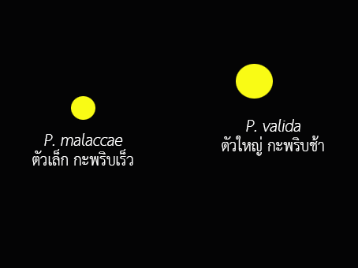

เลือกรูปภาพ
วันที่สำรวจหิ่งห้อย
เวลาสำรวจหิ่งห้อย
ตำบลที่สำรวจหิ่งห้อย
{{province.name}}
ผู้สำรวจหิ่งห้อย
เบอร์โทร
E-mail
ถัดไป
ตำแหน่งและลักษณะพื้นที่สำรวจหิ่งห้อย
แสงไฟรบกวน
มี
ไม่มี
ลักษณะพื้นที่สำรวจ
พื้นที่ชายเลน
บ่อน้ำหรือท้องร่องสวน
สวนรอบบ้าน
สวนป่า
อื่นๆ
สภาพอากาศ
อากาศปลอดโปร่ง
ครึ้มก่อนฝนตก
หลังฝนตก
ร้อนอบอ้าว
อื่นๆ
ถัดไป
กลับ
พิกัด
ดึงตำแหน่งปัจจุบัน
ประเภทหิ่งห้อย
 {{type.name}}
ถัดไป
กลับ
{{type.name}}
ถัดไป
กลับ
ประเภทหิ่งห้อย

 {{fireflyImg.name}}
ถัดไป
กลับ
{{fireflyImg.name}}
ถัดไป
กลับ
ชนิดของต้นไม้
 {{tree.name}}
อื่นๆ
อื่นๆ (ระบุ)
ถัดไป
กลับ
{{tree.name}}
อื่นๆ
อื่นๆ (ระบุ)
ถัดไป
กลับ
จำนวนหิ่งห้อย
หมายเหตุ
ยกเลิกการบันทึก
บันทึกข้อมูล
บันทึกข้อมูลสถานที่เดียวกัน
กลับ